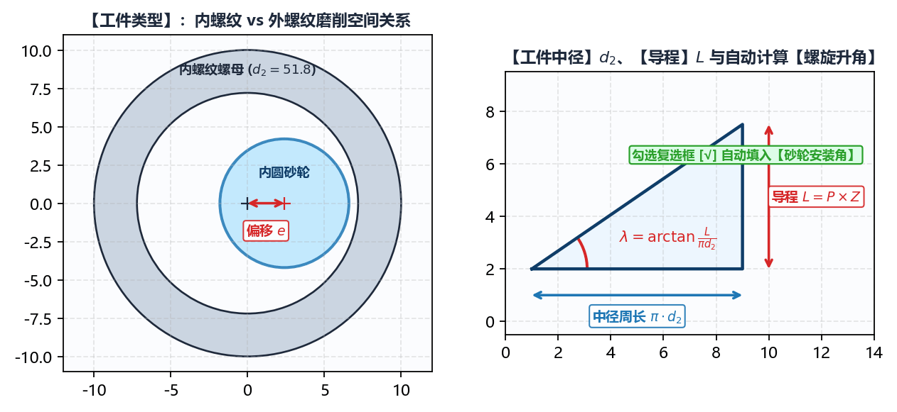

2.1 工件与螺旋参数
基本参数 面板前 4 项共同决定工件三维螺旋面的空间方程，任一项方向设定错误均会导致啮合包络曲率反转。
工件类型与螺纹旋向

工件类型（内螺纹 / 外螺纹）
内螺纹（如BNS-2020-R、BNS-5250-2S丝杠螺母、PRS-2065-3S行星内齿圈）：- 啮合特点：砂轮伸入内孔磨削，外径受内孔限制且与工件螺旋面同向弯曲；
- 干涉特征：空间接触线极长，通常无法以完整理论升角安装砂轮，曲率干涉显著大于外螺纹；
- 界面联动：自动隐藏
外螺纹模式；双圆弧绘图模块中的直径标签切换为工件大径。
外螺纹（如外丝杠、蜗杆ZC1-9808、转子SRM-300F/301M、渐开线花键SPL-60T）：- 啮合特点：在工件外部磨削，或在
内旋风铣模式下由内切刀盘包络外螺纹； - 界面联动：显示
高级参数 -> 外螺纹模式；双圆弧绘图模块中的直径标签切换为工件小径。
- 啮合特点：在工件外部磨削，或在
螺纹旋向（右旋 / 左旋）
右旋：大多数标准滚珠丝杠、蜗杆及阳转子（顺时针旋入）；左旋：反向丝杠或配对阴转子（如左旋SRM-300F）；- 非对称型面核查：当左右齿侧半角或曲率不等时，修改旋向会互换迎刃侧与背刃侧；需结合
镜像开关与加载图形/干涉齿形视图二次核对。
工件中径、导程与螺旋升角
| 参数名称 | 单位 | 工程定义与输入要求 |
|---|---|---|
工件中径（d₂） |
mm | 螺旋面计算基准直径，须与 DXF 齿形中 Y = 0 基准线一致（> 0） |
导程（Ph） |
mm | 旋转一周轴向推进距离；多头工件按 轴向螺距 × 头数 输入 |
理论螺旋升角自动同步
输入正值 工件中径 与 导程 后，系统自动按空间螺旋公式解算中径螺旋升角 λ，显示于 砂轮安装角 右侧数值框：
- 勾选右侧复选框（默认）：自动将
λ填入砂轮安装角，适用于空间无干涉的外螺纹、蜗杆与转子磨削； - 取消勾选（手动输入）：当内螺纹砂轮杆受孔径限制必须减小倾角，或机床转台按固定刻度分度时，取消勾选并如实输入实际角度。